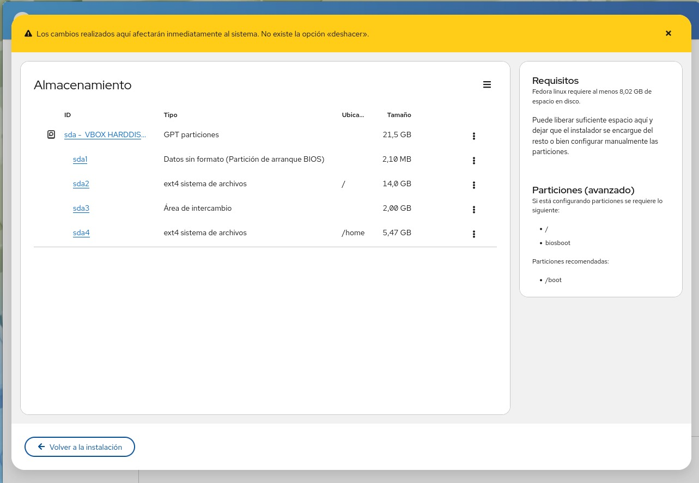
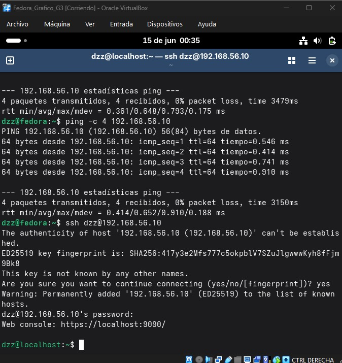
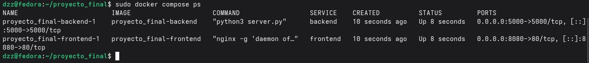
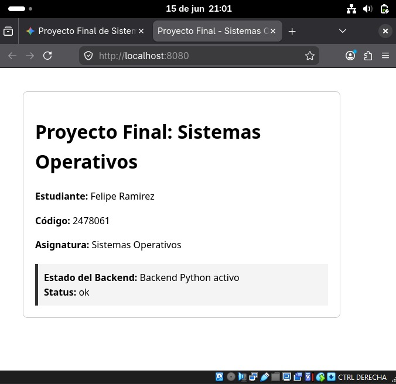
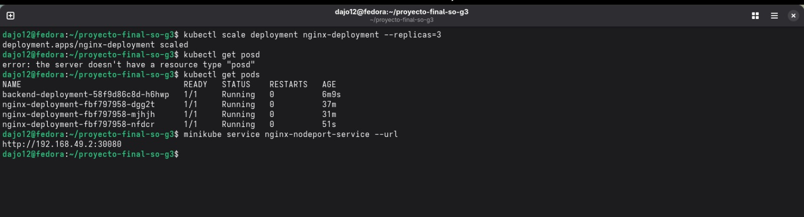
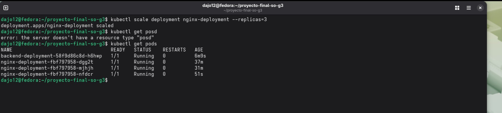

Home
Asignatura: Sistemas Operativos 750001C
Docente: Mg. José Alexander Castañeda Muñoz
Institución: Universidad del Valle
Introducción: Documentación oficial del proyecto de infraestructura tecnológica desarrollado por el Grupo 3. Integra la configuración de entornos virtuales independientes, servicios desacoplados en contenedores mediante Docker Engine y la orquestación automatizada de alta disponibilidad con Kubernetes Minikube.
Equipo
Evelin Xiomara Astudillo Pedroza
(XiomaraAP)
Sitio Web
Código: 2477871
Roony Alejandro Ausecha Lourido
(Roony20-2026)
Documentación y Sitio Web
Código: 2477957
Jhojan Andrés Martínez Peñafiel
(Jhojan9343)
Kubernetes / Orquestación y Video
Código: 2478060
Felipe Ramírez Peñafiel
(d1z1-3)
Backend Developer
Código: 2478061

Paola Andrea Torres Guerra
(paolatorres-png)
Video y Sitio Web
Código: 2478101
Componentes
Descripción, capturas y comandos de cada uno
Componente 1: Virtualización con Linux
Despliegue, configuración y aislamiento de red local de dos entornos de servidores independientes basados en la distribución Fedora 44, implementando políticas de seguridad SSH y esquemas de particionado granular.
- VM Gráfica: Estación Fedora 44 utilizada como nodo de administración.
- VM Consola: Servidor Fedora 44 Server configurado sin interfaz para optimización de recursos.
- Particionamiento: Estructuración guiada manual del almacenamiento asignando espacios exclusivos para la raíz (
/), el área de intercambio (swap) y los directorios de usuario (/home).
Evidencia del Proceso (Almacenamiento):
Configuración del esquema de almacenamiento de particiones estructurado:
Configuración de la tabla de particiones bajo el esquema Utilizar el almacenamiento configurado para un disco virtual GPT de 21,5 GB (sda) en Fedora 44, distribuyendo el espacio de la siguiente manera:
- sda1: 2,10 MB asignados a
biosboot(arranque del sistema). - sda2: 14,0 GB montados en la raíz (
/) para el sistema operativo. - sda4: 5,47 GB reservados para el directorio de usuarios (
/home). - sda3: 2,00 GB asignados como área de intercambio (
swap).

Evidencia del Proceso (Conectividad Segura):
Verificación de la comunicación remota encriptada inter-VM:
Validación del enlace de red local privado establecido de forma transparente entre ambas instancias virtuales de Fedora 44, auditando los siguientes puntos de control de red:
- Aislamiento de Red: Ambas interfaces de red virtuales operan bajo un segmento direccionado exclusivo para el intercambio seguro de datos.
- Autenticación SSH: Handshake criptográfico exitoso desde el nodo de administración gráfico hacia la consola del servidor sin requerir interfaces de usuario.
- Integridad de Canal: Cifrado de extremo a extremo activo que protege el canal de comandos de accesos no autorizados en la red interna.

Comandos:
# Inspeccionar interfaces de red y direccionamiento IP asignado
ip a
# Comprobar la jerarquía y estructura de las particiones de disco activas
lsblk
# Establecer la conexión remota segura hacia el entorno consola
ssh usuario_servidor@ip_maquina_consolaComponente 2: Contenedores Docker
Modularización e instanciación de servicios web desacoplados mediante Docker Engine dentro del servidor gráfico, facilitando la persistencia externa y la vinculación de red interna entre contenedores.
- Frontend: Contenedor Nginx configurado para servir los archivos del portal web estático, expuesto localmente a través del puerto mapeado
8080:80. - Backend: Microservicio HTTP programado en Python, compilado dinámicamente con la imagen base
fedora:44y mapeado internamente en el puerto5000.
Capturas:
Orquestación unificada y levantamiento de servicios locales con Docker Compose:
Verificación operacional del estado de los contenedores donde se observa que ambos microservicios (backend y frontend) se encuentran activos (Up) y direccionando de forma correcta los respectivos puertos hacia el host.

Comprobación de respuestas de red en el navegador:
Acceso exitoso a la interfaz de usuario gráfica de la aplicación final desplegada en el entorno de escritorio local. El panel confirma de forma integrada la lectura fluida de los metadatos del estudiante y el estado de salud del microservicio dinámico de Python.

Comandos Ejecutados:
# Construir imágenes y lanzar la infraestructura de contenedores en segundo plano
docker compose up -d
# Enumerar y verificar el estado operacional de los servicios del proyecto
sudo docker compose ps
# Inspeccionar las imágenes locales almacenadas en el sistema host
docker images
# Validar de forma local la cabecera de respuesta de las rutas HTTP mapeadas
curl http://localhost:8080
curl http://localhost:5000Componente 3: Orquestación con Kubernetes
Migración e inyección de la lógica técnica hacia un entorno de orquestación empresarial administrado de forma local mediante Minikube, implementando un balanceador de carga integrado.
- Manifiestos Declarativos: Estructuración lógica del despliegue en archivos YAML independientes:
backend-deployment.yaml: Gestiona el ciclo de vida y escalado dinámico del servidor Python configurado sobre entornos Fedora 44.frontend-nginx.yaml: Define el pod del servidor web y expone la aplicación al exterior a través de una regla de enrutamiento NodePort.
Capturas:
Inspección técnica de los pods activos y asignación de NodePort:
Validación mediante la terminal del estado operativo de los pods en el clúster, confirmando la asignación exitosa del puerto de nodo (NodePort) que permite la comunicación externa con el balanceador de carga configurado.

Elasticidad e incremento del ecosistema de pods en tiempo real:
Evidencia del despliegue exitoso escalado a tres réplicas del servicio Nginx, verificando la consistencia y disponibilidad de los pods dentro del entorno de orquestación local.

Comandos:
# Inicializar el nodo del clúster de Kubernetes local
minikube start
# Aplicar e inyectar los manifiestos de despliegue al clúster
kubectl apply -f k8s/backend-deployment.yaml
kubectl apply -f k8s/frontend-nginx.yaml
# Visualizar la disponibilidad y estado de salud de todos los pods del nodo
kubectl get pods
# Listar los servicios asignados, IPs internas y mapeos de puertos de red
kubectl get svc
# Escalar de forma manual y vertical a 3 réplicas idénticas simultáneas
kubectl scale deployment/nginx-deployment --replicas=3
# Obtener de forma directa la URL expuesta por Minikube para pruebas externas
minikube service [nombre-servicio] --urlArquitectura
Representación visual del flujo de datos y la infraestructura desplegada, desde la capa de virtualización local hasta la orquestación en el clúster de Kubernetes.
Diagrama de Arquitectura de Alto Nivel
Esquema integral de los componentes, capas de red y servicios desacoplados:

Conclusiones
Aprendizajes
Lograr el despliegue con Minikube y mantener las réplicas activas fue el punto de inflexión del trabajo. Entender cómo Kubernetes gestiona la alta disponibilidad, viendo cómo el sistema reacciona para mantener los pods arriba, nos dio una perspectiva clara de lo que significa que un servicio sea realmente estable. Fue un proceso de aprender a dominar las herramientas de orquestación, entendiendo que la robustez del sistema depende de cómo configuramos cada pieza.
Las dificultades reales
Nuestro mayor obstáculo no fue el código en sí, sino la infraestructura física con la que trabajamos. Al tener dispositivos con almacenamiento limitado y recursos muy ajustados para las máquinas virtuales, el proceso se volvió una lucha constante. Muchas veces el despliegue se interrumpía o quedaba a medias simplemente porque el sistema se quedaba sin espacio o se ahogaba por falta de memoria. Esto nos obligó a ser extremadamente cuidadosos y creativos para buscar espacio donde parecía no haberlo, lo que hizo que el proceso fuera mucho más lento y trabajoso de lo que esperábamos. Esa limitación física fue lo que realmente puso a prueba nuestra paciencia y capacidad para resolver problemas sobre la marcha.
Recomendaciones técnicas
- Gestión de recursos (Limit/Requests): Es indispensable establecer
resources.limitsyresources.requestsen los manifiestos YAML. Esto evita que el scheduler de Kubernetes sobreasigne recursos a los pods, previniendo el node pressure o el eviction de contenedores por falta de memoria RAM en entornos con hardware restringido. - Optimización de imágenes (Multi-stage builds): Ante las limitaciones de almacenamiento, se recomienda implementar multi-stage builds en los Dockerfiles. Esto permite generar imágenes finales que solo contienen el artefacto compilado y las dependencias de ejecución, reduciendo drásticamente el peso de la imagen y ahorrando espacio en disco durante el pulling.
- Uso de volúmenes efímeros: Para procesos que requieren escritura temporal, se sugiere el uso de volúmenes de tipo
emptyDircon un límite explícito de tamaño (sizeLimit). Esto asegura que el sistema no exceda la capacidad de almacenamiento del nodo durante la ejecución de los pods. - Limpieza de clúster: Establecer un hábito de ejecución de comandos de purga de recursos huérfanos (
docker system pruneokubectl deletede pods en estadoEvictedoFailed) es necesario para liberar espacio en disco de forma periódica en ambientes de desarrollo con recursos limitados.